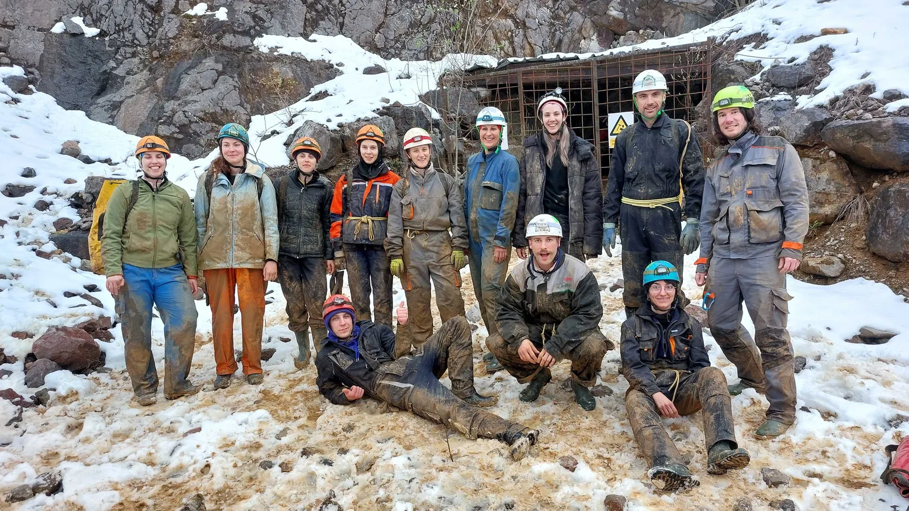

Prvo špiljarenje
I tako smo došli do izlaza, izlazim van i prvo što vidim i čujem je Gogu kako kaže: „Jana, ti pišeš izvještaj o prvom izletu!“. Ajme meni!

Autorica: Jana Požeg Krišković
Fotke: Ines Šašić, Gorana Perić, Matija Hrženjak, Petra Jagodić, Ivona Klišanin
Krećemo lagano van, tražim svog instruktora – nigdje na vidiku. Nakon nekoliko koraka i mokrih skokova nalazim ga uz lokvicu – traži podzemne organizme. Ipak, razumijem čovjeka s obzirom da smo po struci kolege, i krenem promatrati što je on to sve pronašao. U međuvremenu sva ekipa prolazi pored nas. Shvatili smo, kako bi Majke rekli; Vrijeme Je Da Se Krene. I tako smo došli do izlaza, izlazim van i prvo što vidim i čujem je Gogu kako kaže: „Jana, ti pišeš izvještaj o prvom izletu!“. Ajme meni! :))
Ali, da se vratim na početak. Taj vikend bio je rezerviran za našu Veternicu, domaći teren reklo bi se, pošto nam je baza u Zagrebu. Međutim, iz nepoznatih i neočekivanih razloga :)) izlet u Veternicu nije bio moguć. Okej, nema veze, idemo mi u Tounj na dva dana, malo se maknut iz Zagreba, lijepa priroda i još ljepše društvo, naučit ćemo bivakirat!! No naša atmosfera je dan prije izleta ipak imala druge planove: vremenski armagedon u Zagrebu i naleti vjetra i snijega u Gorskom kotaru. Škola otkazana u petak, nitko ne izlazi iz kuće. Svi nestrpljivo čekamo uz mobitel da vidimo što će biti s prvim izletom, otkazuje li se? Odgađa li se? Modificira li se? Treća sreća što se tiče organizacije – dvodnevni izlet se pretvorio u jednodnevni. Na sreću ili nažalost? Ovisi s kojeg gledišta promatramo. Na sreću jer je to značila puno manja mogućnost da se dio ekipe porazbolijeva i potencijalno provede ledenu besanu noć, a nažalost jer imamo jedno iskustvo manje bivakiranja u školici (i svega ostalog što ide uz bivakiranje i dodatno bi nas zbližilo). Ali nema veze, čeka nas i to!
Nakon promjene plana, nalazimo se u nedjelju ujutro na parkingu Velesajma. Potrpali smo se u aute i krenuli. Stižemo do Valentina u Tounju, gdje smo napravili poprilično dobar promet taj dan, i pada prva kavica. Nakon kratke, ali dovoljno duge kave uputili smo se prema kamenolomu. Oblačimo se za špilju, nosimo potrebne stvari i krećemo prema ulazu. Ulaz je onako, neatraktivan, pomalo post-apokaliptičan, no ono što je slijedilo unutra definitvno ne poprima te epitete.
Mislim da neću pogriješiti ako u ime svih školaraca kažem da smo bili jako uzbuđeni doživjeti taj Velebitaški stol, i to po zemljom! No, prije nego što nam je cirkulacija pobjegla u trbuhe smo ju ipak još malo zadržali u mozgovima da poslušamo Ferino predavanje o rasvjeti u špiljarenju.
Čuli smo nešto o karabitkama i stpljivo čekali da se pojavi plamen – ko čeka, taj i dočeka! Zatim smo vidjeli neke modernije i jače lampe, a nakon toga je nastupio Dalibor i rekao nam nešto o povijesti špilje te nas upoznao s njenim nacrtom i dao nam predodžbu o tome gdje ćemo se danas kretati. Iiii dolazi taj trenutak, marenda! Još uvijek mislim na onaj pesto od medvjeđeg luka i na one kiflice...
I krećemo napokon u istraživanje špilje. Želiš gledati sav prostor oko sebe koliko je fascinantno, ali moraš gledati u pod i u osobu ispred sebe. No ipak, trudiš se naći balans između tog troje. Špiljarenje je definitivno zabavan način kretanja. Poput planinarenja, ali ispod zemlje. Uz još malo penjanja, otpenjavanja, puzanja, skakanja, pa i provlačenja. Aha, da, bilo je i spuštanja na toboganu! Sve u svemu, jako dinamična aktivnost. U jednom trenu smo stali kraj mini jezerca i sa puno upitnika iznad glava gledali Luku kako veže uzlove. Pokušavali smo ga pratiti, no to je kao kad imaš vježbe iz GIS-a: pokušavaš pratiti profesora, uspiješ napraviti taj jedan korak, digneš pogled i profesor je već 4 koraka ispred tebe. Tko je slušao GIS, zna :D . Da predavanje ne bi bilo uzaludno, na sljedećem check pointu smo svi zajednički s instruktorima uvježbavali uzlove, dok su drugi veslali (da, veslali!) ili plivali (da, plivali!). Bilo je to na Mamutovom jezeru – impozantno podzemno jezeru u dvorani visokih svodova. Tamo nas je dočekao gumeni čamac u kojem smo se mogli provozati po cijelom jezeru koje s „plažice“ izgleda kao da nema kraja. Nakon romantične vožnjice neki su se odlučili i bućnuti u jezeru, a to su bila 3 instruktora i samo jedan školarac (bravo, Matija!!). Sad kada razmišljam, žao mi je što nisam i ja! Sljedeći put u špilju definitivno nosim ručniček, just in case.
Nakon ovog, po meni, vrhunca izleta, krećemo nazad prema izlazu. Proveli smo cca 9 sati u špilji, ali niti u jednom trenu nam nije bilo dosadno niti dosta. Nismo vjerovali da je bilo već 19 sati kad smo izašli! A izašli smo zmazani, iscrpljeni i ispunjeni! Mislim da osmjesi i radna odijela govore sve :)